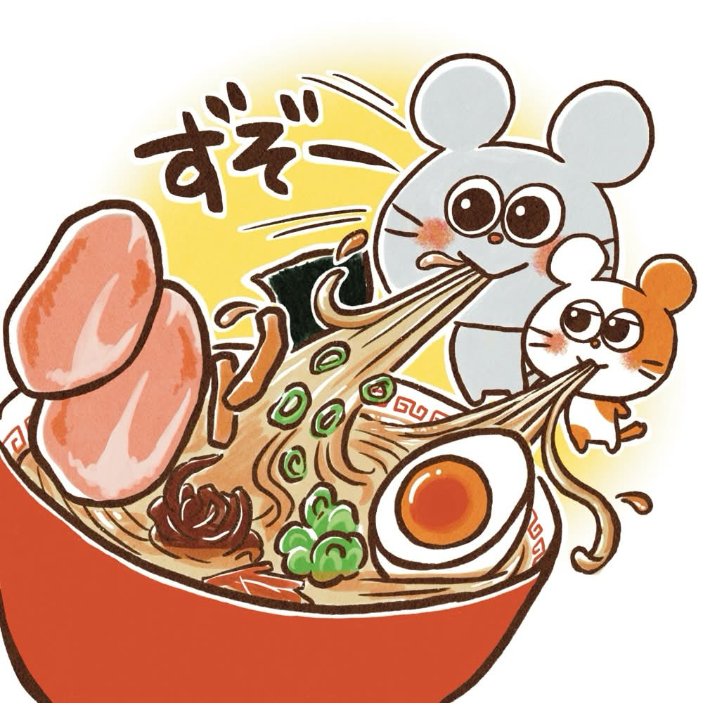
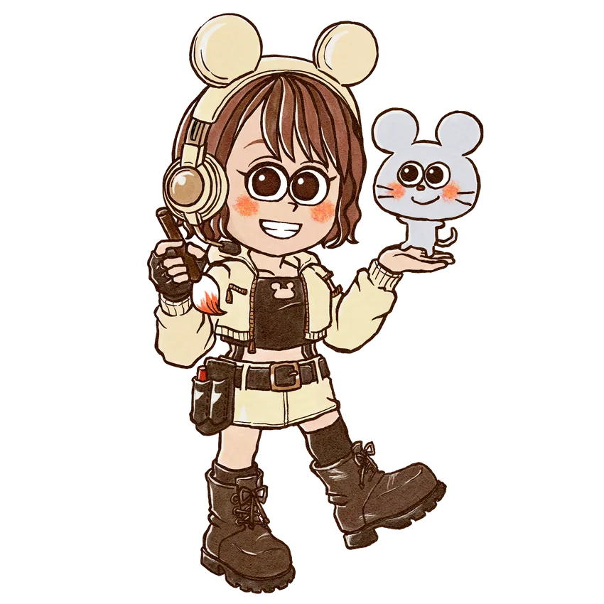
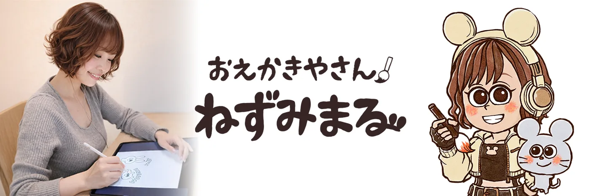

NEZUMIMARU ILLUSTRATIONSCROLL ↓
おえかきやさん・ねずみまる 公式ホームページ
汲んで、描いて、すぐ届く。
あたたかくて、ちょっと楽しい。
まんまる寄り目のなかまたちと、
日々の小さな物語を描いています。
NEW!
LATEST ON X
いまのお知らせ
新しいお知らせや、現在の固定ポストは Xのプロフィール でご確認ください。

ABOUT ME
ねずみまる
げっ歯目似の絵描き・ねずみまるです。
寄り目が特徴のキャラクターを描きます。
挿絵・漫画・間違い探し・アイコン・似顔絵・ロゴ・名刺・人物デフォルメなど。
ご依頼主さまの気持ちを汲んで、はやく描きあげるのが持ち味です。
ORIGINAL CHARACTER
ねずみのちょろりについて

ちょろりと、ちゃまるの小さな世界
ふたりといっしょに、
今日もたのしく。
まんまるの目と、やさしいほっぺ。ねずみのちょろりと仲間たちが、毎日の小さな「うれしい」を届けます。
キャラクター紹介、まちがいさがし、ゲーム、LINEスタンプなどをまとめたページへ。
ちょろりの世界をのぞくPORTFOLIO
作品の入口
気になるカテゴリから、作品をご覧ください。

HISTORY
受賞と展示のあゆみ
作品を通して出会えた、これまでの出来事。
受賞 MZDAO PRコンテスト X部門 最優秀賞
受賞 Cluster GAMEJAM2022 テーマ賞受賞作品のワールド制作・バナーを担当
受賞 7月 Nコレ大阪賞（夢見詩葉）
活動 イラストレーターとして独立開業
展示 渋谷PARCO、京セラドーム大阪、和歌山城天守閣などで作品を展示
展示 みやざきアートセンター、松本市立博物館、世田谷美術館などで作品を展示
展示 JR山手線 新橋駅・原宿駅・品川駅で作品を展示
掲載 書籍『CUT 2024年度版』に掲載
詳しい活動・展示情報は リットリンク にまとめています。
PROFILE
自己紹介

はじめまして、絵描きのねずみまるです。
キャラクターや似顔絵、挿絵、デザインを通して、伝えたい気持ちをあたたかい一枚にしています。ご相談の段階から、いっしょに形を考えることを大切にしています。
いっしょに作る相談をする経歴
- 3D CADオペレーター
- 「似顔絵ちゃーち」開業。結婚式の似顔絵ウェルカムボードを150組以上制作。雑誌「mama girl」にて子育て漫画を掲載。
- ファイナンシャルプランナー
- 税務署
- 設計測量
- 広報・イラストレーター
- イラストレーターとして独立開業。企業様の広報誌で間違い探しを連載。4コマ漫画・似顔絵・名刺などを制作。
FOLLOW & LINKS
絵と、日々のこと。
新しい作品や活動は、まずXでお知らせしています。
LET’S CREATE TOGETHER
想いをかたちにする、
お手伝いをします。
キャラクター・似顔絵・イラスト・デザイン。
まずは、お話を聞かせてください。